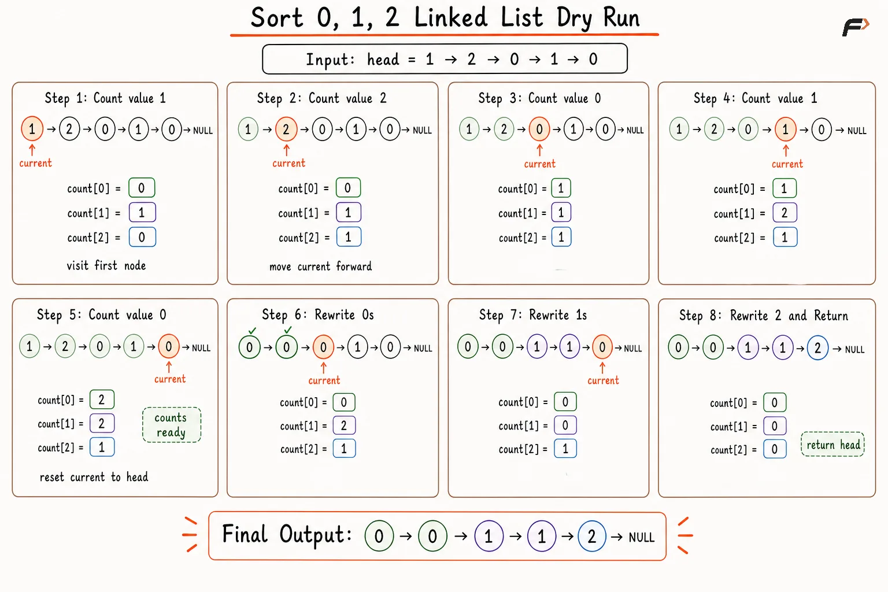
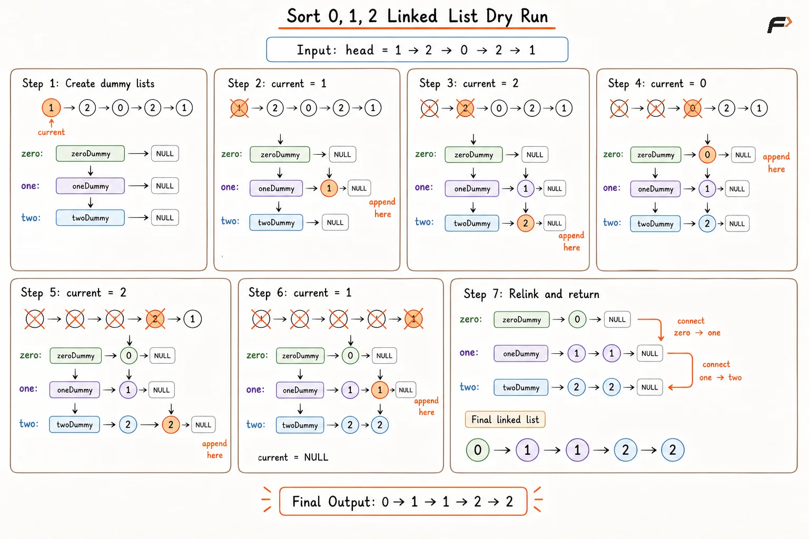

Sort a Linked List of 0s, 1s and 2s by Changing Links
Given the head of a singly linked list, where every node contains only 0, 1, or 2, sort the linked list in non-decreasing order.
Return the head of the sorted linked list. Linked list examples appear in array form for compact representation.
Example 1
Input: [1, 2, 0, 1, 2, 0, 1]
Output: [0, 0, 1, 1, 1, 2, 2]
Explanation: All 0 values move to the front, followed by all 1 values, followed by all 2 values.
Example 2
Input: [2, 2, 1, 0]
Output: [0, 1, 2, 2]
Explanation: Sorted order places the single 0 first, the single 1 next, and both 2 values at the end.
Approach 1: Frequency Counting
Since every node contains only one of the three values - 0, 1, or 2we first count the frequency of each value in a single traversal. Once the frequencies are known, we traverse the linked list again and overwrite the node values in sorted order.
We first write all 0s, followed by all 1s, and finally all 2s according to their frequencies. This sorts the linked list without changing its structure. The approach is simple, runs in linear time, and uses only constant extra space, but it modifies the values stored in the existing nodes.
Algorithm
Initialize an array of size
3to store the frequencies of0,1, and2.Traverse the linked list once and increment the corresponding frequency for each node value.
Reset the traversal pointer to the head of the linked list.
Rewrite node values with
0until its frequency becomes zero.Continue rewriting node values with
1, followed by2, until all frequencies are exhausted.Return the original head of the updated linked list.
Dry Run

sort 0 1 2 brute force
Solution
#include <bits/stdc++.h>
using namespace std;
class Node {
public:
int data;
Node* next;
// Constructor to create a linked list node.
Node(int value) {
data = value;
next = nullptr;
}
};
class Solution {
public:
// Function to sort the linked list with frequency counting.
Node* sortList(Node* head) {
// Return the same head for empty or single-node lists.
if (head == nullptr || head->next == nullptr) {
return head;
}
// Store counts for values 0, 1, and 2.
int count[3] = {0, 0, 0};
Node* current = head;
// Count occurrences of 0, 1, and 2.
while (current != nullptr) {
count[current->data]++;
current = current->next;
}
current = head;
int value = 0;
// Rewrite node values in sorted order.
while (current != nullptr) {
// Skip values whose frequency is already exhausted.
while (value < 3 && count[value] == 0) {
value++;
}
// Place the current sorted value into the node.
current->data = value;
// Consume one occurrence of the placed value.
count[value]--;
current = current->next;
}
return head;
}
};
// Function to build a linked list from an array.
Node* buildList(vector<int>& arr) {
// Return null for an empty input array.
if (arr.empty()) {
return nullptr;
}
// Create the head node from the first value.
Node* head = new Node(arr[0]);
Node* tail = head;
// Append the remaining values one by one.
for (int index = 1; index < (int)arr.size(); index++) {
tail->next = new Node(arr[index]);
tail = tail->next;
}
return head;
}
// Function to print linked list values.
void printList(Node* head) {
Node* current = head;
// Print every node value in sequence.
while (current != nullptr) {
cout << current->data;
if (current->next != nullptr) {
cout << " ";
}
current = current->next;
}
cout << "\n";
}
// Driver code.
int main() {
vector<int> arr = {1, 2, 0, 1, 2, 0, 1};
Node* head = buildList(arr);
Solution sol;
head = sol.sortList(head);
printList(head);
return 0;
}Complexity Analysis
Time Complexity: O(N), one traversal counts values and one traversal rewrites values.
Space Complexity: O(1), only three counters and a few pointers are used.
Approach 2: Relinking Nodes
Instead of changing node values, we rearrange the existing nodes by modifying their next pointers. We create three separate chains for nodes containing 0, 1, and 2. Dummy heads make insertion simple, while tail pointers allow each node to be appended in constant time.
During traversal, each node is detached from the original list and added to its matching chain. After all nodes are processed, the three chains are connected in sorted order: 0-list → 1-list → 2-list.
This approach keeps the original node values unchanged and sorts the linked list using pointer manipulation only.
Algorithm
If the linked list is empty or contains only one node, return the head directly.
Create three dummy heads and three tail pointers for the
0,1, and2lists.Traverse the original linked list one node at a time.
Detach the current node from the original list and append it to the corresponding list based on its value.
Connect the
0list to the first non-empty list among the1list and the2list.Connect the
1list to the2list and set the final tail'snextpointer toNULL.Return the head of the first non-empty list.
Dry Run

Sort 0s, 1s and 2s using dummy nodes
Solution
#include <bits/stdc++.h>
using namespace std;
class Node {
public:
int data;
Node* next;
// Constructor to create a linked list node.
Node(int value) {
data = value;
next = nullptr;
}
};
class Solution {
public:
// Function to sort the linked list by relinking nodes.
Node* sortList(Node* head) {
// Return the same head for empty or single-node lists.
if (head == nullptr || head->next == nullptr) {
return head;
}
// Create dummy heads for the three value-based chains.
Node zeroDummy(0);
Node oneDummy(0);
Node twoDummy(0);
// Tail pointers keep O(1) append operations for each chain.
Node* zeroTail = &zeroDummy;
Node* oneTail = &oneDummy;
Node* twoTail = &twoDummy;
Node* current = head;
// Detach each node and append into the matching list.
while (current != nullptr) {
// Save the next pointer before detaching the node.
Node* nextNode = current->next;
current->next = nullptr;
if (current->data == 0) {
zeroTail->next = current;
zeroTail = zeroTail->next;
} else if (current->data == 1) {
oneTail->next = current;
oneTail = oneTail->next;
} else {
twoTail->next = current;
twoTail = twoTail->next;
}
current = nextNode;
}
// Connect non-empty lists in sorted order.
zeroTail->next = (oneDummy.next != nullptr) ? oneDummy.next : twoDummy.next;
oneTail->next = twoDummy.next;
twoTail->next = nullptr;
// Return the first non-empty chain as the final head.
if (zeroDummy.next != nullptr) {
return zeroDummy.next;
}
if (oneDummy.next != nullptr) {
return oneDummy.next;
}
return twoDummy.next;
}
};
// Function to build a linked list from an array.
Node* buildList(vector<int>& arr) {
// Return null for an empty input array.
if (arr.empty()) {
return nullptr;
}
// Create the head node from the first value.
Node* head = new Node(arr[0]);
Node* tail = head;
// Append the remaining values one by one.
for (int index = 1; index < (int)arr.size(); index++) {
tail->next = new Node(arr[index]);
tail = tail->next;
}
return head;
}
// Function to print linked list values.
void printList(Node* head) {
Node* current = head;
// Print every node value in sequence.
while (current != nullptr) {
cout << current->data;
if (current->next != nullptr) {
cout << " ";
}
current = current->next;
}
cout << "\n";
}
// Driver code.
int main() {
vector<int> arr = {1, 2, 0, 1, 2, 0, 1};
Node* head = buildList(arr);
Solution sol;
head = sol.sortList(head);
printList(head);
return 0;
}Complexity Analysis
Time Complexity: O(N), every node is visited once and appended once.
Space Complexity: O(1), only dummy nodes and tail pointers are maintained.
Interview follow-up Questions
Yes. Frequency counting followed by value rewriting produces the sorted order in linear time.